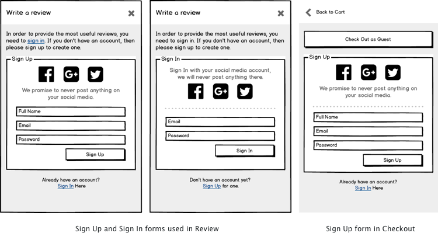

Ethical Shopper
Ethical Shopper is a project where I combined my design skills with my love for animals, equality and the environment, exploring the use of design to influence consumer behavior.
Summary of the Project
Ethical Shopper is based on a course project where we were asked to design an ecommerce shopping experience. I worked independently while meeting with my mentor on a weekly basis. My focus of this project was to design the overall e-commerce framework, but specifically focusing on the user stories defined. The project took 3 weeks from start to finish, roughly 150 hrs in total.
View Final DesignThe Problem
With the rise in popularity of minimalism, more and more people started to become conscious about what they bring into their lives. In this process of being more conscious, it is common for one to become more interested about different aspects of the product: how long it will last, how it was made, how the materials were sourced, and what are its environmental impact at disposal. An average consumer may not consider all of these factors when they are buying a shirt, but at the end of the day, people want to feel good about their purchase. They want to know that their purchases will serve them well and serve them for a long time, and better yet, align with their values.
I have caught myself with the following dilemma, what makes a product ethical? A $50 bag from fast fashion retailers may not not be fair-trade, but it is vegan. A $300 bag may be fair-trade, but the use of leather can make it lose its appeal to some. How can a conscious consumer make the best decision in the ethical aspect, and how can retailers help with this through the design of their online store? This is an additional problem that I wanted to address in this ecommerce design project.
The Process
I started the project by writing a design brief (see below) and setting my intentions for this project, then narrowing down the scope of the project by listing out the user stories so that I know I have covered the key functionalities and would be able to focus on what is most important. Then for each user story I created variations of low-fidelity wireframes in Balsamiq in order to quickly brainstorm different layout ideas before choosing the best one for hi-fidelity design. During the process I prototyped twice to get peer feedback and two user testing to make sure the design satisfies the user goals. For the final prototype I used Flinto which allowed me to create more detailed interactions that makes the design more effective.
This project will leverage the nature of e-commerce to explore the possibility of encouraging people to make ethical choices when purchasing products online. Specifically, making information such as environmental impact, the use and treatment of animals as well as the fair trade aspect of the product easily accessible and digestible so one can make informed decisions when purchasing.
User Stories
- As a user, I want to browse products
- As a user, I want to quickly understand where each product stands in terms of the ethical criteria
- As a user, I want to view details about a specific product
- As a user, I want to view ratings and reviews for a product
- As a user, I want to add a product to my cart
- As a user, I want to pay for my items with a credit card, Amazon Payments or PayPal
- As a user, I want to sign up for an account
Research
I selected a few online stores that have some ethical aspects such as Everlane and Patagonia, as well as the popular store Aritzia to learn how they currently handle browsing, product detail, and checkout in order to find out what works well, what needs improvement. For example, Everlane and Aritzia has a visually appealing, easy to navigate product detail page: with large product images and clearly laid-out product information. While the user is scrolling, the page will scroll through all the product images before revealing the rest of the product description. This is works very well because shoppers often browse through the images, and sometimes need to refer back to the product infomration, so having the product information stay in-place helps the user to focus on what is moving.
Design Highlights
Here are a few interesting challenges I ran into during the design phase, and my solution for each of them.
Ethical Criteria
While working on the product category page, I needed a way to quickly show the whether each product meets various ethical criteria, so first I needed to identify what those criteria are. I narrowed it down to 4: vegan, cruelty-free, fairtrade and eco-friendliness. The four criteria can exist independently except that vegan products are a subset of cruelty free products. To make things even simpler I used icons to represent each of the four ethical criterion.
These icons are used throughout the site, in product category pages where the user can easily see how each product performs ethically, as well as in product detail pages where a more detailed explanation is given.Overall Site Architecture
Before creating the initial layout for Ethical Shopper, I first did a quick research how other online retailers structure their site. One pattern that I observed was that stores that carry large amount of merchandise usually has an additional side navigation that quickly takes the user to a different product category, but I decided against it because it would distract the browsing experience the current category.
I also played around with the idea of having a legend for the different ethical criteria because I wanted it to be clear what those symbols meant, but I also didn’t want the ethical symbols to overwhelm the site and distract from the shopping experience. So in the end I did not include the legend anywhere but rather used the home page to tell the story of Ethical Shopper (I will talk about the home page design later). If the user forget what the the icon meant, he/she can simply hover over it and be reminded with a tooltip.
In the navigation, I also included shopping cart, sign-in/sign-up and search for quick access. Right below the navigation I included breadcrumbs to help orient the user, as well as an option to apply filter on their browsing results.
While translating the wireframes into designs, I had a few more ideas on the positions of the navigation and decided to do a preference test. My thought is that when browsing products on the desktop, we usually have enough horizontal real estate, but vertical real is limited and is made even more precious with a top navigation and filter bar. I created a variation with a left side nav and put the idea to a preference test. However, the test result revealed that none of the 16 participants liked the left navigation, and 95% liked the second option the best because of its visual simplicity and, I would guess familiarity? So I chose the 2nd variation as my overall site architecture.
Product Detail Page
The objective of the product detail page was to be free of distractions, and make the information easily discoverable, and key actions such as “Add to Cart” and “Save for Later” should be readily available. In the mobile version I made these two points of actions fixed to the bottom. This way, they are always accessible as the user browse through the product page. I designed a slide up transition for the buttons so the movement catches the user's attention, making the buttons even more obvious.
Note the buttons slide-up transition
Product images are no doubt the most important element in online shopping, especially for fashion, so I made sure at least half of the screen real estate are allocated to it. It is not evident here but I designed a dual panel scrolling behavior to browse through the product images because it is the easiest interaction.
For writing a review for the product, I opted for a modal dialog so that the user does not need to navigate away from this page, and when the review is done, the dialog disappears, and the user is back to exactly where he/she left off and is free to continue browsing. In mobile, a full-size panel with a slide up transition is used to make the most out of the limited screen space.
Checkout Process
The objectives of the checkout design was present the cart contents and the associated costs in a clear, readable manner, and making the payment process frictionless and forgiving (i.e. No account? No problem. Want to make a change at the last minute? No problem.)
When designing the checkout process, I started by brainstorming the different check-out scenarios, specifically whether the user is signed in, and whether they have an account or not. For first time users, one is more likely to checkout as guest. This way I know what components I need to include in my design.
- As a first time user, I want to check out the items in my cart without signing up
- As a first time user, after I have checked out, I want to use the information I filled in already to create an account
- As a first time user, I want to quickly create an account via social sign-in so I don’t have to remember any password
- As a returning user, I want to login via email and password before checkout
- As a returning user, I want to login via social sign-in before checkout
I always kept in mind to design for mobile first, in the case of e-commerce sites it is especially crucial because the site is so information heavy. Mobile first ensures that all the key information will fit and work on a small screen.
Sign-In and Sign-Up
I created a survey to see what people’s preferences are regarding social sign-on, and found out there are quite a bit of dislikes around social authentication, mainly because people are afraid that websites will post to their social media accounts. What I also found out is that 50% of the participants revealed that they have so many accounts with various online stores they don’t even remember what they have. That is a lot of accounts, and passwords to remember. Therefore I decided to include social sign-on in my design, but address the worry of authorized or unauthorized posting to give the users a peace of mind.
The sign-in and sign-up forms are used in various places, here it is used in “write a review” as well as the first step in the checkout process. I included a disclaimer accompanying the social sign-on buttons letting the user know that the Ethical Shopper will not post anything on their social media.
Home Page
The home page of this project was one that I had the most difficulties with, mainly because it is a fictitious site and I didn’t have any clear goals on what I want to achieve with the home page. So the first iterations was just some common elements that I saw in other online stores, such as best sellers, new arrival, and a banner legend explaining the ethical filters.
However, after testing the prototype with a few users, one of the feedback I got was that the narrative of the site is not clear: because the site’s focus on the ethical aspect of shopping, the audience expect and want to know how the products or the platform is different from other sites, and just exactly what the site is all about. I thought that the home page would be the perfect place to provide a clear first impression.
I narrowed down the objective of the home page to be a simple introduction of what Ethical Shopper is about, but still providing the user a way to skip this introduction anytime to go straight to shopping. Check out the final design to see my solution for the home page!
Final Design
I am quite happy with the design overall, although I added one more element to a site that is already information ridden in nature, the design looks clean and fresh, it is easy to navigate, thoughtful and delightful in interaction.
Lessons Learned
The preference test on the site navigation came as a shocker to me, because what I thought was a touch of genius was not accepted by others at all. This made me realize that for functional products, people really enjoy the simple and the familiar.
However, now ask I am writing this I doubt that this preference test is truly accurate. What would be a better test is to have two groups use the prototype to perform certain tasks, then ask them to rate how much they like the site design and layout. Since what people say they like is not always indicative of what they actually like.
I skipped a crucial step in the very beginning which is defining what the store is. As you can see it is a pretty generic fashion retailer. One of the reason is because I knew that I wanted the store to feel mainstream as my intention was to design a site that makes ethical shopping as convenient and mainstream as any other high street fashion retailer. However it would have helped to flesh it out in more detail such as identifying what items it sells, its target audience etc. This caused me to go back and forth in many user stories such as the home page and product detail page because the goals were not clear.
In addition, in this project I used Flinto to create various interactions in the site, the sliding in and out transitions, loading in between pages, which not only adds to the quality of the design but they have practical values too. For example the slide up transition for the mobile buttons make them more discoverable, the drop down effect of the filter makes its relationship with the rest of the page more clear.
Disclaimer
The product images are from J.Crew because they are my favorite store. This is a personal, experimental, project that is not for profit. Home page images are purchased from Stocksy.
Like what you read? There's more!

Styaile
a mobile app design
Product Showcase
a responsive landing page for a mobile app